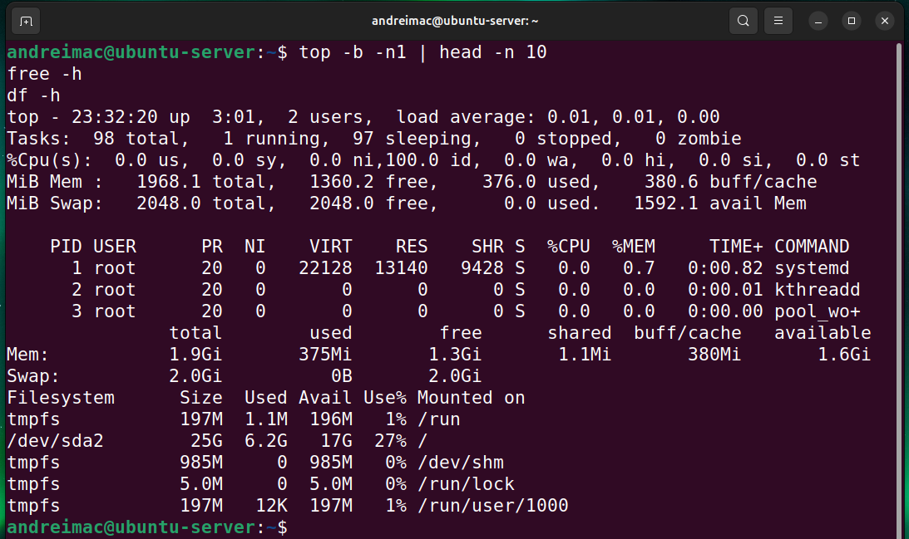
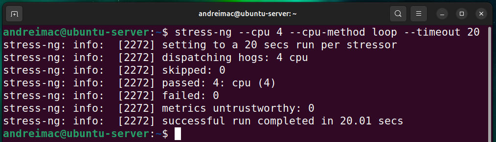
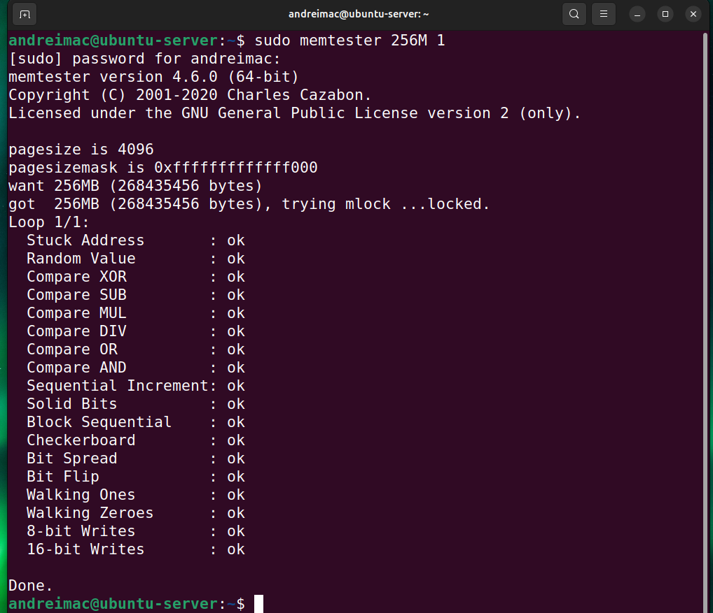
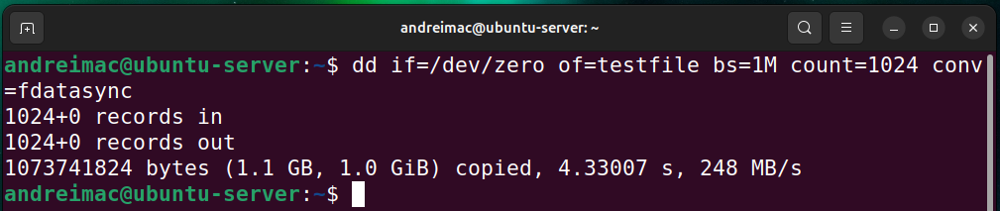
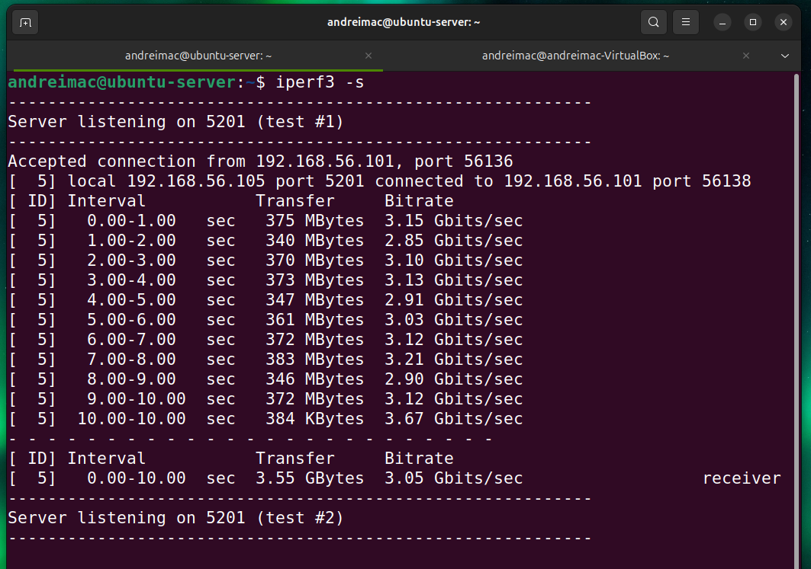
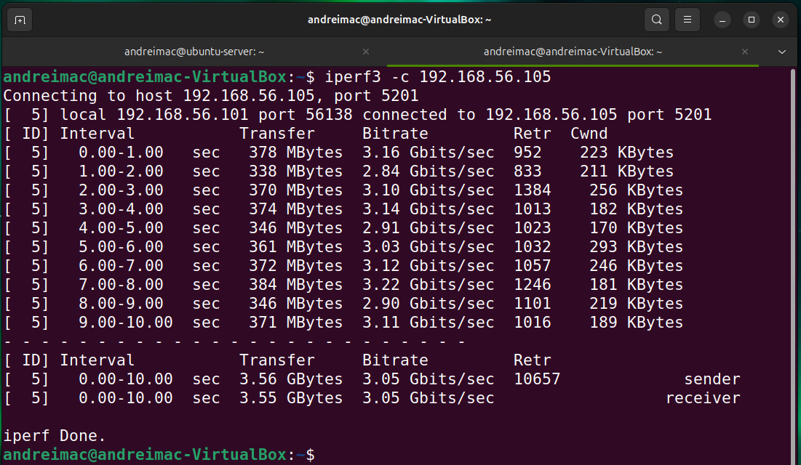
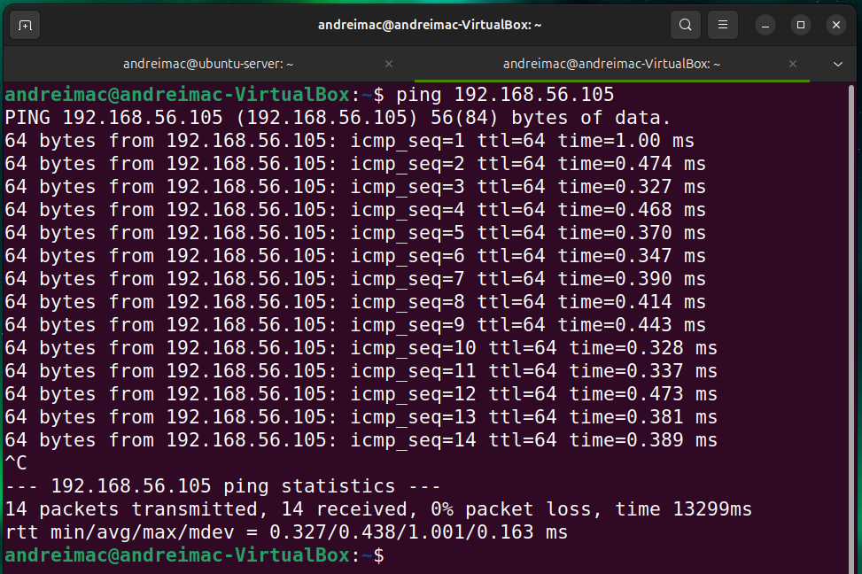

Performance testing of the Ubuntu Server VM, identification of bottlenecks, and reflection on virtualisation-related trade-offs.
This phase executes detailed performance testing of the Ubuntu Server and analyses operating system behaviour under different workloads, using the workstation–server dual VM setup and remote administration via SSH.
For each application or service chosen, the following metrics were selected, monitored and compared where appropriate:
For each application or service chosen, the following scenarios were considered, monitored and compared where appropriate:
This week involved evaluating the server’s performance under various workloads to analyse operating system behaviour. Baseline system metrics were recorded and compared against results from CPU, memory, disk I/O, network throughput, and latency tests. Performance data was collected using command-line tools and used to identify system capacity, responsiveness, and potential bottlenecks. The results provide quantitative evidence of system stability and performance characteristics.
top -b -n1 | head -n 10
free -h
df -h

This screenshot captures the baseline system performance of the Ubuntu server before any load testing was applied. The top command shows the system in an idle state with 100% CPU idle time, confirming no active workload at the time of measurement. The free -h output indicates that the system has approximately 1.3 GiB of free memory available with no swap usage, demonstrating sufficient memory headroom. The df -h output confirms stable disk utilisation, with only 27% of the root filesystem in use. These baseline measurements provide a reference point for comparison against subsequent CPU, memory, disk, and network stress tests, enabling accurate performance analysis and bottleneck identification.
stress-ng --cpu 4 --cpu-method loop --timeout 20

This screenshot demonstrates CPU load testing performed using stress-ng, where four CPU worker threads were executed for 20 seconds to simulate sustained processor load. The output confirms that all four CPU stressors completed successfully with no failures or skipped tests, indicating stable CPU behaviour under load. This test was conducted to evaluate processor performance and responsiveness during high utilisation and provides data for comparison against baseline CPU metrics to identify potential bottlenecks or performance limitations.
sudo memtester 256M 1

This test evaluated system memory stability by allocating and testing 256 MB of RAM using memtester. All memory test patterns completed successfully with no errors, indicating reliable RAM performance under load. These results are used to compare against baseline memory usage and assess system behaviour during memory-intensive operations.
dd if=/dev/zero of=testfile bs=1M count=1024 conv=fdatasync

This test measured disk write performance by writing a 1 GiB file using the dd utility with synchronous writes enabled. The result shows a sustained write speed of approximately 248 MB/s, indicating stable disk I/O performance. These results are used to compare disk behaviour before and after load and to identify potential storage bottlenecks.
iperf3 -s

This screenshot shows an iperf3 network throughput test between the workstation and the server. The server successfully accepted a connection and sustained an average throughput of approximately 3.05 Gbits/sec over a 10-second test, demonstrating high network performance over the host-only network.
iperf3 -c 192.168.56.105

This test measured network throughput between the workstation and the server using iperf3. The results show an average transfer rate of approximately 3.05 Gbits/sec over a 10-second test, indicating high-performance network connectivity. This data is used to evaluate network capacity and compare against other performance metrics.
dping 192.168.56.105

This test measured network latency between the workstation and the server using ICMP echo requests. The results show an average round-trip time of approximately 0.44 ms with 0% packet loss, indicating low-latency and reliable network connectivity. These measurements support the evaluation of system responsiveness under normal operating conditions.
Together, these improvements reduce unnecessary background processing and improve security posture without requiring major system changes, supporting more consistent and reliable performance results.
| Test Type | Tool Used | Key Result | Evidence Source |
|---|---|---|---|
| CPU Usage | stress-ng | CPU fully utilised during the 20-second stress test with 4 workers and no errors reported | stress-ng output showing all CPU stressors passed |
| Memory Usage | memtester | No memory errors detected during 256 MB memory test | memtester output showing all tests marked as “ok” |
| Disk I/O Performance | dd | Sequential write speed of approximately 248 MB/s | dd output copying 1 GiB in ~4.33 seconds |
| Network Performance | iperf3 | Sustained throughput of approximately 3.05 Gbits/sec between workstation and server | iperf3 sender and receiver summary |
| System Latency | ping | Average round-trip time of approximately 0.44 ms with 0% packet loss | ping statistics showing avg RTT ≈ 0.438 ms |
The following interactive charts, built with Plotly.js, aggregate the CPU and network measurements captured in the terminal screenshots and show how utilisation and throughput change under load.
The chart below summarises the key performance results for CPU, Disk I/O and Network throughput. (Different units are shown as labels; bars are scaled for easy comparison.)
The CPU utilisation chart summarises how busy the server was at three points in the
experiments: almost idle at baseline, noticeably higher during the iperf3
network load, and then dropping back down once the test finished. It shows that even
when stressed, the VM stayed well below 100% utilisation and quickly returned to a
low-load state, which matches the snapshots seen in the top output.
The network chart compares throughput and retransmissions for the two
iperf3 runs. Throughput remains consistently high (around 3 Gbit/s)
while the number of retransmitted segments is also high and very similar across both
runs. This combination supports the conclusion that the virtual NIC / VirtualBox
networking layer is the main bottleneck, rather than TCP tuning inside the Ubuntu
guest.
Combining results from CPU, disk and network tests leads to the following overall assessment of system bottlenecks:
stress-ng to produce metrics appears to stem
from
VirtualBox’s handling of performance counters and timing, not from the Ubuntu scheduler.
The experiments confirmed that while command-line tools such as stress-ng, dd,
ping and iperf3 are powerful for understanding OS behaviour, their outputs
must be
interpreted in the context of the underlying platform. In a fully virtualised environment, the
hypervisor
can distort CPU metrics, cache disk writes aggressively and implement networking via virtual switches
that
behave differently from physical networks.
Apparent performance values may therefore reflect the efficiency of the virtualisation layer rather than the intrinsic performance of the Linux kernel or its configuration. The optimisation attempts around network buffers reinforced this point by showing that tuning within the guest OS cannot overcome limitations imposed by VirtualBox’s implementation.